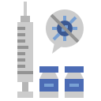
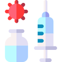

DATOS DE MADRID
VACUNAS RECIBIDAS
% de la población

VACUNAS ADMINISTRADAS
% de la población
El % de vacunas recibidas ya han sido administradas

PERSONAS INMUNIZADAS
% de la población
Personas que han recibido las dos dosis de la vacuna.
Suponen un
%
de las dosis administradas.
Supone el % del
total sobre la población de la Comunidad de Madrid
Datos actualizados a
DATOS DE ESPAÑA
VACUNAS RECIBIDAS

VACUNAS ADMINISTRADAS
PERSONAS INMUNIZADAS
Datos actualizados a
DATOS POR COMUNIDADES
VACUNAS RECIBIDAS
pulse cada barra para ver la cantidad
VACUNAS ADMINISTRADAS
PERSONAS INMUNIZADAS
Datos actualizados a